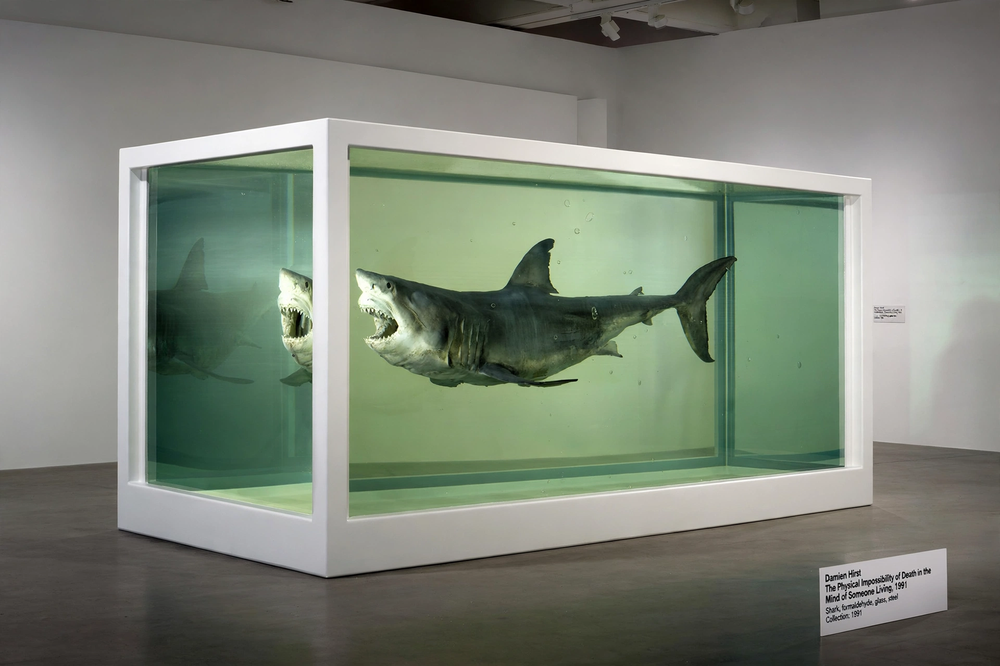

Young British Artists

The Young British Artists, or YBAs (also referred to as Brit artists and Britart), are a loose group of visual artists who first began to exhibit together in London in 1988. Many of them studied at Goldsmiths College, and they became known for shock tactics, the use of throwaway materials, wild living, and an entrepreneurial attitude toward opportunity; they achieved considerable media coverage and dominated British art during the 1990s.
Freeze and Sensation
The group's launch point was the 1988 exhibition Freeze, organised by Damien Hirst in a disused London warehouse. Advertising executive Charles Saatchi became their leading collector and champion, mounting a series of exhibitions at his gallery. The 1997 Royal Academy exhibition Sensation, drawn from Saatchi's collection, toured to Berlin and New York, where it provoked controversy — notably over Chris Ofili's The Holy Virgin Mary and Marcus Harvey's portrait Myra — and a freedom-of-expression dispute with Mayor Rudy Giuliani at the Brooklyn Museum.
Artists and legacy
Associated artists include Hirst, Tracey Emin (My Bed, Everyone I Have Ever Slept With 1963–1995), Sarah Lucas, Gary Hume, Rachel Whiteread, the Chapman brothers and Sam Taylor-Johnson. Critics remain divided over the YBAs' art-historical significance, but their fusion of art, celebrity and the market, and their role in London's emergence as a contemporary-art capital, are widely acknowledged.
See also: Damien Hirst, Tate